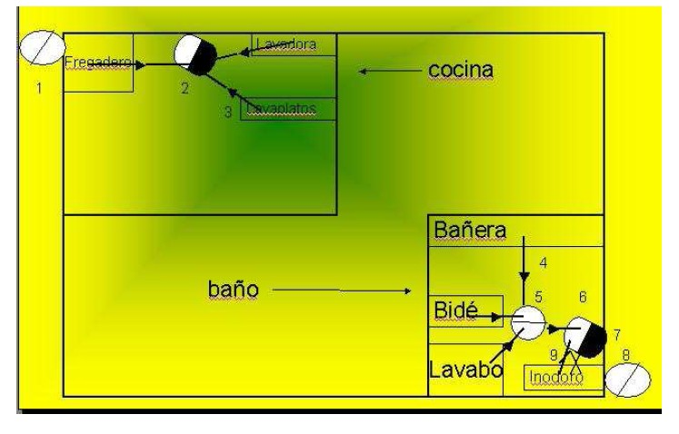

Esquema unifilar
1. Bajante de pluviales 2. Bajante de fecales de la cocina 3. Desagüe del lavaplatos 4. Desagüe de la bañera 5. Bote sifónico 6. Bajante de fecales del baño 7. Bajante de fecales del baño 8. Bajante de pluviales
